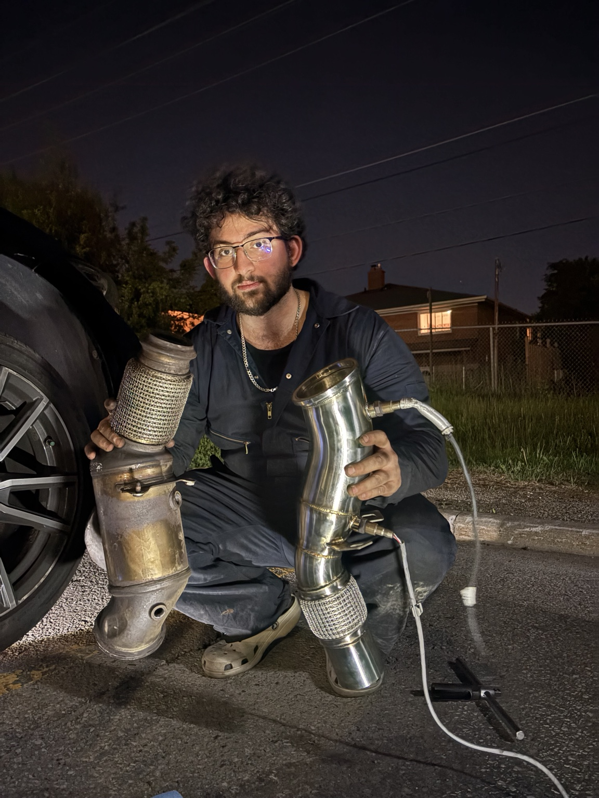
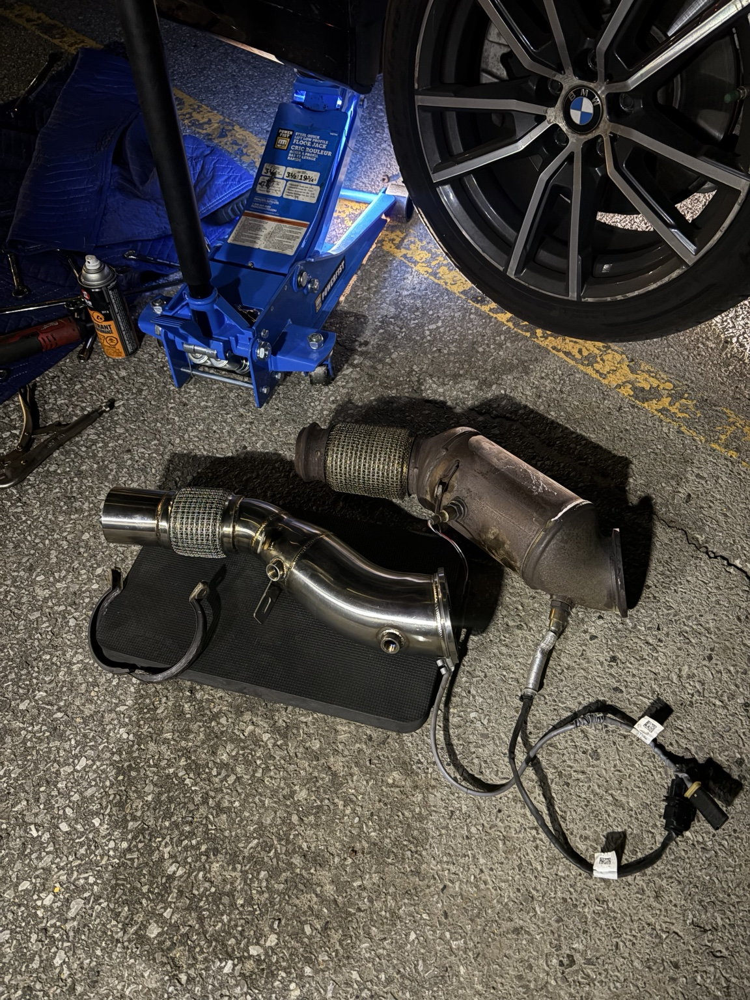
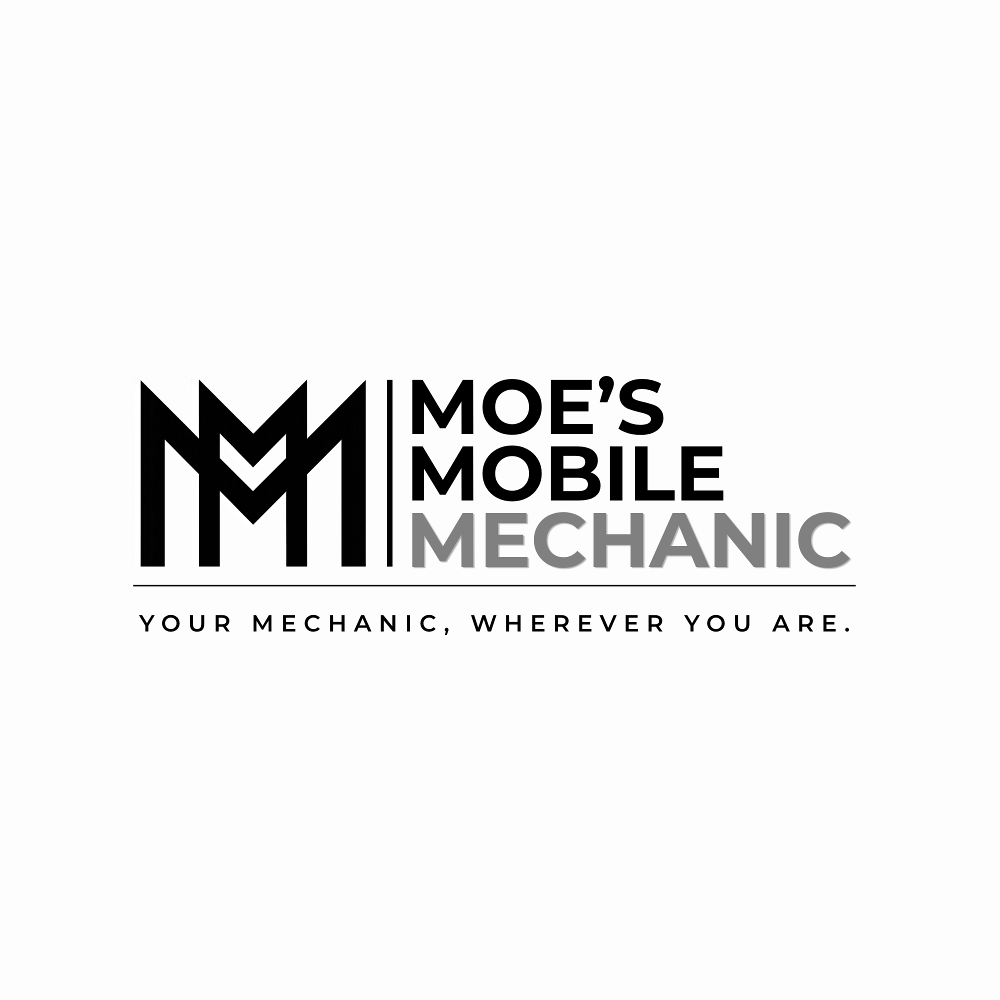

Meet Moe
Honest mobile mechanic service across the GTA.
Hi, I'm Moe. I provide mobile automotive diagnostics and repair services throughout Toronto and the GTA. Whether your vehicle won't start, needs brakes, suspension work, electrical diagnostics, or performance upgrades, I bring professional tools directly to your location.
Honest advice. Fair pricing. Quality repairs.

Services
What We Service
Diagnostics
Check engine lights, electrical diagnostics, fuel system issues, and no-start troubleshooting.
Brakes
Brake pads, rotors, calipers, seized brakes, and brake bleeding.
Batteries & Boosts
Battery boosts, testing, replacements, and charging system checks.
Starters & Alternators
Mobile starting and charging system repairs at your location.
Suspension & Steering
Suspension components, steering parts, tie rods, links, and related repairs.
Maintenance
Oil changes, spark plugs, fluid services, tire swaps, and tune-ups.
Electrical Repairs
Ignition issues, wiring concerns, sensors, and electrical troubleshooting.
Performance & Exhaust
Downpipe installs, exhaust work, and selected performance upgrades.
Emergency Mobile Service
Roadside and driveway repairs when you need help fast.
Trusted By GTA Drivers
5-Star Customer Service
Recent Work
Real Mobile Repairs


Starting Prices
Simple, Clear Pricing
Minimum Mobile Service Call$85+
Hourly Labour Rate$90/hr
Diagnostics$85–120
Oil Change Labour$60+
Battery Boost$85+
Tire Swap on Rims$60+
Brake Service$180+/axle
Alternator / Starter$180+
Spark Plugs$120+
Final price depends on vehicle, location, parts, rust, and job difficulty. Contact us for a quote.

Need a Mobile Mechanic?
Send your year, make, model, location, and the service you need.